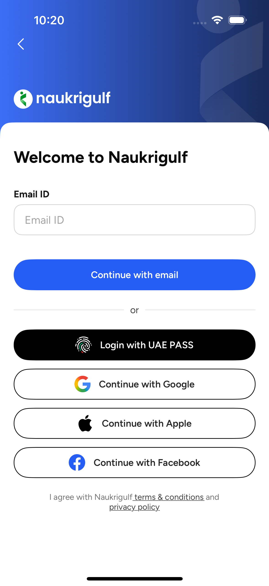
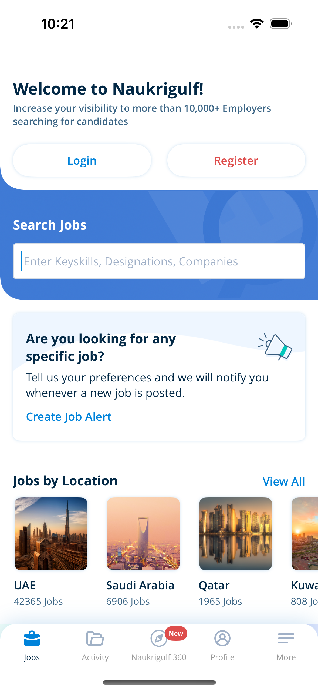
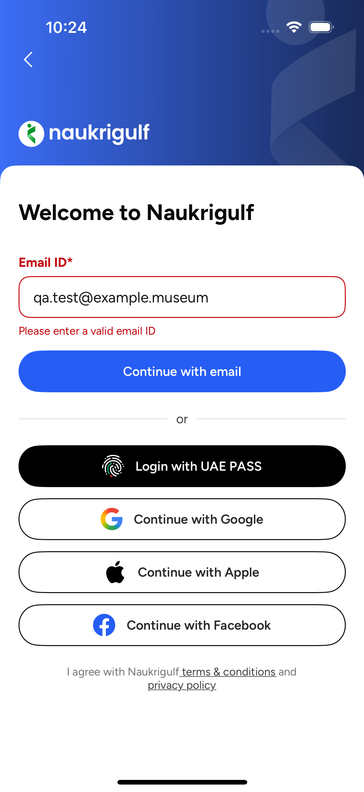
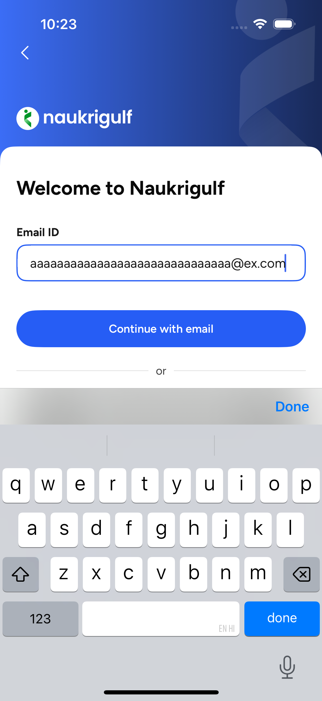

QA Run Report
NaukriGulf iOS · qaAgent · RUN_20261102_221949
0FAILED
0BLOCKED
2NEEDS REVIEW
10PASSED
0SKIPPED
15NOT EXECUTED
| Run ID | RUN_20261102_221949 |
|---|---|
| Started | 2026-11-02T22:19:49 |
| Finished | 2026-11-02T22:24:53 |
| Kind | pilot |
| Git branch | salary_SRPtitle |
| Commit | caf11655ef1d |
| App build | Debug (simulator) |
| Device | iPhone 16 |
| Backend | production (www.ngma.mobi) |
| Features | Login |
| Jira | — (not linked yet) |
| Executed duration | 256.8s |
| Candidates awaiting approval | 27 |
Failures
No failures in this run.
All tests
| ID | Test | Status | Pri | Expected | Actual / observation | Sec | Shot |
|---|---|---|---|---|---|---|---|
| LOGIN_001 | Login screen opens from Jobs home Login button | PASSED | P1 | Login screen with 'Welcome to Naukrigulf' and Email ID field is displayed | As expected | 16.3 |  |
| LOGIN_002 | Login screen shows all entry options | PASSED | P2 | Email ID field, 'Continue with email', 'Login with UAE PASS', 'Continue with Google', 'Continue with Apple', 'Continue with Facebook' are present | As expected | 15.1 | |
| LOGIN_003 | Back arrow returns to Jobs home | PASSED | P2 | Jobs home with 'Login' and 'Register' buttons is shown again | As expected | 14.0 |  |
| LOGIN_004 | Continue with empty email does not proceed NEEDS_REVIEW: Code passes isShowValdText=false for empty input, so 'Please specify your Email ID' may never be shown. Is a silent no-op the intended UX? | PASSED | P1 | User stays on Login screen; no API call is made | Empty-email message 'Please specify your Email ID' shown: false | 17.7 | |
| LOGIN_005 | Invalid email shows validation message | PASSED | P1 | 'Please enter a valid email ID' is displayed and user stays on Login screen | As expected | 22.0 | |
| LOGIN_006 | Malformed email formats are rejected | PASSED | P2 | 'Please enter a valid email ID' is displayed for every value | As expected | 55.5 | |
| LOGIN_007 | Email with TLD longer than 4 letters NEEDS_REVIEW: Should valid long-TLD emails be accepted? Current regex rejects them. | NEEDS REVIEW | P3 | NEEDS_REVIEW — code regex rejects TLDs > 4 letters (.museum, .technology) although they are valid addresses | 'qa.test@example.museum' -> validation error shown: true | 18.8 |  |
| LOGIN_008 | Valid email format shows no validation error | PASSED | P1 | No validation message is displayed | As expected | 25.2 | |
| LOGIN_009 | Email field limited to 80 characters | PASSED | P3 | Field holds at most 80 characters (maxCharacterAllowed = 80) | Typed 85 chars, field holds 80 | 15.1 |  |
| LOGIN_010 | Plus-addressing and dots are accepted | PASSED | P3 | No validation message is displayed | As expected | 20.0 | |
| LOGIN_011 | Email with surrounding spaces NEEDS_REVIEW: Requirement on trimming whitespace is not defined. | NEEDS REVIEW | P3 | NEEDS_REVIEW — should input be trimmed or rejected? | ' qa.test@example.com ' -> field value 'qa.test@example.com ', validation error shown: true | 21.3 | |
| LOGIN_012 | Login screen controls have accessibility labels | PASSED | P3 | Every button and text field exposes a non-empty accessibility label | As expected | 15.6 | |
| LOGIN_020 | New email continues to Registration | NOT EXECUTED | P1 | GET /ngprofile/user/emailValidation returns 200 and Registration screen opens | Needs staging environment + test data | — | |
| LOGIN_021 | Existing email continues to password screen with email prefilled | NOT EXECUTED | P1 | emailValidation returns 400 and password screen opens with email prefilled | Needs staging test account | — | |
| LOGIN_022 | emailValidation server error / timeout NEEDS_REVIEW: No user feedback on server error/timeout in handleContinueBtnTap. Intended? | NOT EXECUTED | P2 | NEEDS_REVIEW — code shows no message for non-200/400 responses; button is re-enabled | No user feedback on server error/timeout in handleContinueBtnTap. Intended? | — | |
| LOGIN_023 | Rapid taps on Continue send one request | NOT EXECUTED | P3 | Only one emailValidation request is sent (preventMultipleTaps 30s) | Needs staging env + request inspection | — | |
| LOGIN_024 | Correct password logs the user in | NOT EXECUTED | P1 | POST /nglogin/user/login succeeds; AT/RT saved; logged-in tabs shown | Needs staging test account | — | |
| LOGIN_025 | Wrong password shows invalid credentials banner | NOT EXECUTED | P1 | 401 -> banner 'Invalid username or password' | Needs staging test account | — | |
| LOGIN_026 | Too many attempts shows rate-limit banner | NOT EXECUTED | P2 | 429 -> banner 'Too Many tries! Please try after some time!' | Needs staging account safe to lock | — | |
| LOGIN_027 | Empty password on submit NEEDS_REVIEW: checkforAnyValidationError clears password validation instead of checking it (NGLoginViewModel L348-350). | NOT EXECUTED | P2 | NEEDS_REVIEW — validatePassword exists but is not applied on submit; request is sent without password | checkforAnyValidationError clears password validation instead of checking it (NGLoginViewModel L348-350). | — | |
| LOGIN_028 | Server error on login shows generic message | NOT EXECUTED | P2 | Banner 'There is some technical error. Please try again later' | Needs API mocking | — | |
| LOGIN_029 | Login success without AT/RT headers | NOT EXECUTED | P3 | Generic error banner; user not logged in | Needs API mocking | — | |
| LOGIN_030 | Password field: secure entry, max 20 chars, forgot-password link NEEDS_REVIEW: Max 20 chars may block users with longer existing passwords — confirm. | NOT EXECUTED | P2 | Input masked, max 20 characters, Forgot Password visible | Max 20 chars may block users with longer existing passwords — confirm. | — | |
| LOGIN_031 | No internet on Continue NEEDS_REVIEW: Expected offline UX not specified. | NOT EXECUTED | P2 | NEEDS_REVIEW — expected offline message not defined | Expected offline UX not specified. | — | |
| LOGIN_032 | Session persists after relaunch | NOT EXECUTED | P1 | User remains logged in | Needs staging test account | — | |
| LOGIN_033 | Logout then login again | NOT EXECUTED | P2 | Logout succeeds; re-login succeeds | Needs staging test account | — | |
| LOGIN_034 | Social / UAE PASS login buttons | NOT EXECUTED | P2 | Provider auth opens; on success user is logged in or routed to registration | External providers; manual only | — |


Uncommitted changes in app repo
- SwiftRevamp/NaukriGulf/NaukriGulf.xcodeproj/project.pbxproj
- SwiftRevamp/NaukriGulf/NaukriGulf.xcodeproj/xcuserdata/mradul.atray.xcuserdatad/xcschemes/xcschememanagement.plist
- SwiftRevamp/NaukriGulf/Pods/Pods.xcodeproj/xcuserdata/mradul.atray.xcuserdatad/xcschemes/xcschememanagement.plist
- SwiftRevamp/NaukriGulf/NaukriGulf.xcodeproj/xcshareddata/xcschemes/NaukriGulfUITests.xcscheme
- SwiftRevamp/NaukriGulf/NaukriGulfUITests/
PASSED is only reported for tests that actually executed. NOT EXECUTED = needs staging/test accounts/mocks or manual. NEEDS REVIEW = expected behaviour undefined; observation recorded.